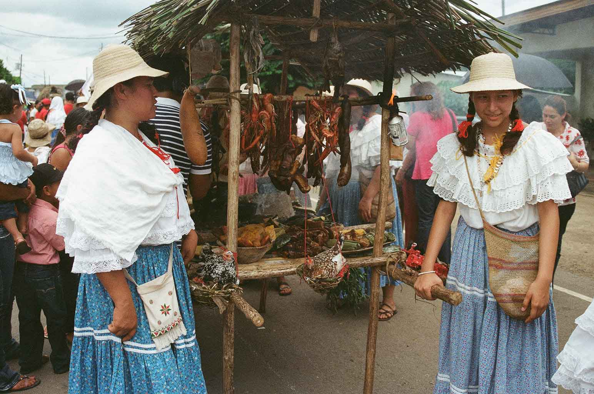

Nuestra gastronomía
Degusta de una amplia variedad de platillos tradicionales visitando la feria de San Sebastian en Ocú. ¡Ven y Sorprendete con los exquisitos platos elaborados con productos frescos de la región!
Este tipo de desayuno suele ser abundante y nutritivo, ya que se prepara con ingredientes frescos y locales, y a menudo se consume temprano en la mañana para tener energía para el trabajo en el campo. El desayuno del campo es una opción nutritiva y sabrosa que puede proporcionar una fuente de proteínas, fibra, vitaminas y minerales.
El arroz con pollo es un plato nutritivo y delicioso que puede ser parte de una dieta saludable y equilibrada.
El arroz y el pollo son ricos en vitaminas y minerales esenciales, como hierro, zinc, fósforo, niacina y vitamina B6.
¡Disfruta de un delicioso arroz con pollo en las fondas de nuestra feria de San Sebastián!
El sancocho de gallina es un plato tradicional que se prepara con gallina, ñame, culantros, oréganos. Considerado un símbolo de la identidad nacional.
El sancocho de gallina es nutritivo, fácil de preparar, versátil y muy apreciado en la cultura panameña.
Los dulces en Ocú son parte importante de la gastronomía del área y se elaboran con una gran variedad de ingredientes locales como la miel de caña, leche, la panela y frutas tropicales.
Es parte de la gastronomía de la región con beneficios económicos para la comunidad.